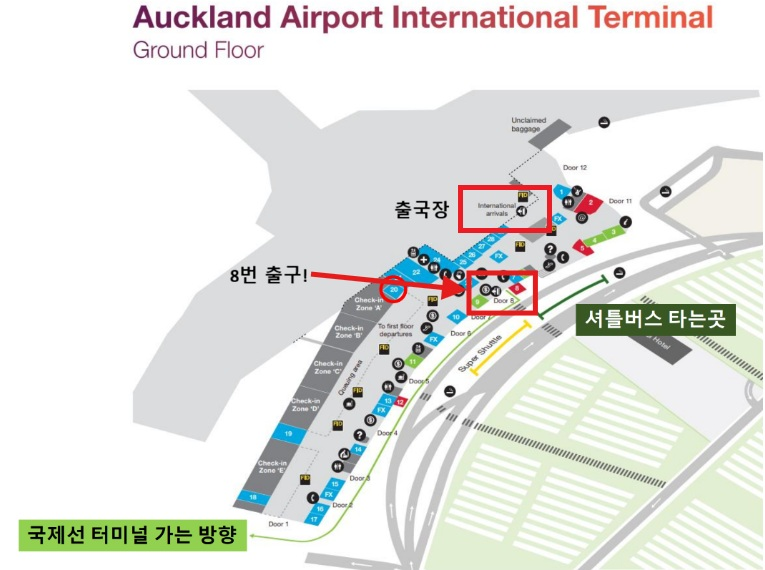
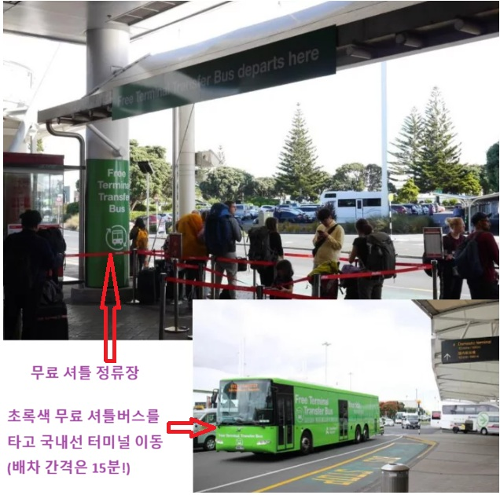

🇳🇿 26년 9월
뉴질랜드 여행 가이드
3대가 함께하는 따뜻한 힐링 여행
✈️ D-Day 계산 중...
🚗 안내사항
🚗 1. 교통 안내
✈️ 출국 안내 (오클랜드 환승)
⚠️ 중요: 오클랜드(AKL) 공항 도착 후, 반드시 수하물을 먼저 직접 픽업하신 다음에 국내선 카운터로 이동하여 크라이스트처치행 체크인을 다시 진행하셔야 합니다!

📍 국제선 입국장 통과 후 8번 출구로 나가셔서 국내선 터미널로 가는 초록색 무료 셔틀버스를 이용합니다.

📍 순환 셔틀버스를 탑승하거나 바닥의 녹색 선을 따라 도보(약 10~15분)로 국내선 터미널로 이동하실 수 있습니다.
- 국제선 (대한항공): 비지니스석, KE1234
- 📅 9월 27일 18:00 인천(ICN) 출발 ➡️ 9월 28일 09:35 오클랜드(AKL) 도착
- 국내선 (Air New Zealand): 일반석, NZ5678
- 📅 9월 28일 12:00 오클랜드(AKL) 출발 ➡️ 9월 28일 13:25 크라이스트처치(CHC) 도착
- 픽업 안내: 아들 가족이 크라이스트처치 공항 입구에서 차량과 함께 대기 중입니다! 내리시면 바로 연결됩니다. 😍
✈️ 귀국 안내
- 국제선 (대한항공): 이코노미석, KE5678
- 📅 10월 10일 12:05 오클랜드(AKL) 출발 ➡️ 10월 10일 20:20 인천(ICN) 도착
🏔️ 남섬 투어 교통
- 교통편: 온 가족이 쾌적하게 이동할 수 있는 9인승 밴 렌터카 대기 예정!
🌋 북섬 이동 안내
- 국내선 (Air New Zealand): 일반석, NZ1234
- 📅 10월 8일 09:00 크라이스트처치(CHC) 출발 ➡️ 10월 8일 10:25 오클랜드(AKL) 도착
👴 2. 부모님 참고 사항
- 날씨: 한국과 계절이 반대라 아침저녁으로 꽤 쌀쌀합니다. 걸쳐 입을 수 있는 따뜻한 겉옷을 꼭 챙기세요.
- 신발: 잔디밭과 이쁜 자연을 많이 걸으니 꼭 가장 편한 운동화를 신어주세요.
🚨 3. 비상 연락처 (SOS)
전화번호를 터치하시면 바로 통화 창으로 연결됩니다.
- 🙋♂️ 연우 번호 010-1234-5678
- 🙋♀️ 효라 번호 010-9876-5432
- 🚑 현지 긴급 신고 국번없이 111
🗓️ 상세 여행 일정
🏔️ 남섬 대자연 일주 (1일차 ~ 11일차)
🗓️ 1일차 (9월 27일, 일) - 인천 출발 ▼
16:00
인천공항 도착 및 출국 준비 📍 지도
18:00
대한항공 탑승 후 오클랜드로 출발
🗓️ 2일차 (9월 28일, 월) - 크라이스트처치 도착 및 휴식 ▼
🗓️ 3일차 (9월 29일, 화) - 크라이스트처치 시내 투어 ▼
🗓️ 4일차 (9월 30일, 수) - 테카포 호수와 마운트쿡 이동 ▼
08:00
자택 출발
09:00
제럴딘 도착, 짧은 휴식 (카페, 화장실, 작은 마을 산책) 📍 지도
09:30
레이크 테카포 방향 이동
10:30
레이크 테카포 도착, 호수 + 선한 목자의 교회 사진 촬영 📍 지도
11:00
레이크 푸카키 방향 이동
11:30
레이크 푸카키 전망 포인트 (마운트쿡이 호수 너머로 보이는 명당) 📍 지도
11:50
연어팜 이동
12:10
연어팜에서 점심 식사 🐟 📍 지도
13:00
마운트쿡 빌리지로 최종 이동
14:00
숙소 체크인 및 짐 정리
14:30
더 허미타지 호텔 주변 산책, 카페에서 전망 감상 📍 지도
16:30
(선택 일정) 후커밸리 트랙 초입까지 짧게 다녀오기 📍 지도
18:30
저녁 식사 (18:30 ~ 20:00)
20:00
이후 날씨 좋으면 밤하늘 별 보기
🗓️ 5일차 (10월 1일, 목) - 와나카 경유 퀸스타운 이동 ▼
08:00
마운트쿡 출발 후 린디스 패스 방향 이동 (약 2시간 소요)
10:00
린디스 패스 전망 포인트 휴게 (사진 촬영, 화장실) 📍 지도
10:20
와나카 이동 시작
11:20
와나카 도착 — 그 나무 사진 촬영 및 호수 산책 🌳 📍 지도
12:20
와나카에서 점심 식사 (12:20 ~ 13:20)
13:20
(선택 일정) 퍼즐링월드 관람 📍 지도
14:20
카드로나 이동, 카드로나 호텔 짧게 들르기 📍 지도
14:50
크라운 레인지 넘어 퀸스타운 이동 (전망대 잠깐 정차 및 사진 촬영) 📍 지도
15:50
퀸스타운 도착 및 숙소 체크인
18:30
저녁 식사 (와카티푸 호수 뷰 레스토랑, 18:30 ~ 20:00) 📍 지도
20:00
이후 자유시간 및 호수변 밤 산책
🗓️ 6일차 (10월 2일, 금) - 밀포드사운드 가이드 투어 ▼
06:00
새벽 기상 및 간단한 준비
06:30
픽업 또는 투어 출발 (퀸스타운 → 테아나우 방향 이동)
09:30
테아나우 휴게 (화장실 이용 및 스트레칭) 📍 지도
09:50
테아나우 → 밀포드사운드 이동 (미러레이크, 호머 터널 등 경유) 📍 지도
11:30
밀포드사운드 도착 및 승선 준비
12:00
🚢 밀포드사운드 크루즈 탑승 관람 (1.5 ~ 2시간 소요) 📍 지도
14:00
하선 후 점심 식사 (투어 포함 도시락 등)
14:30
밀포드사운드 → 테아나우 방향 귀환 이동
17:00
테아나우 휴게소 정차
17:20
테아나우 → 퀸스타운 귀환 이동
19:30
퀸스타운 도착 및 숙소 복귀
20:00
늦은 저녁 식사 (숙소 근처에서 가볍게)
🗓️ 7일차 (10월 3일, 토) - 퀸스타운 투어 후 더니든 야간 이동 ▼
09:00
기상 및 늦은 아침 식사 (전날 강행군 회복)
10:00
스카이라인 곤돌라 매표소로 이동
10:20
🚡 스카이라인 곤돌라 탑승 후 전망대 이동 📍 지도
11:00
루지 탑승 🎿 (아이는 체험, 어르신은 전망대 카페 휴식 및 뷰 감상)
12:00
곤돌라 전망대 레스토랑 점심 식사 (퀸스타운 전경 감상)
13:00
곤돌라 하산
13:30
와카티푸 호수 선착장 이동
14:00
TSS 언슬로 유람선 탑승 투어 (45분 항해) ⛵ 📍 지도
14:45
선착장 복귀 후 자유시간
15:15
아로우타운 이동 (차량 약 20분 소요)
15:45
아로우타운 골드러시 옛 거리 산책 및 기념품숍 구경 🏘️ 📍 지도
16:45
퀸스타운 시내로 복귀
17:30
퀸스타운에서 이른 저녁 식사 (호수 뷰 레스토랑, 17:30 ~ 18:30)
18:30
🚗 더니든 방향 야간 장거리 운전 이동 시작 (약 3.5시간 소요)
19:00
1차 구간 이동
20:00
중간 휴게 (알렉산드라 또는 록스버그 근처, 화장실 및 스트레칭) 📍 지도
20:20
2차 구간 이동 및 더니든 진입
21:50
더니든 숙소 도착 및 늦은 체크인 진행 (21:50 ~ 22:20)
🗓️ 8일차 (10월 4일, 일) - 고풍스러운 더니든 명소 투어 ▼
09:00
기상 및 아침 식사 (숙소 또는 근처 카페)
10:00
마우리 힐 방문 📍 지도
10:30
존 맥글레이션 컬리지 구경 📍 지도
11:00
조지 스트리트 구경 📍 지도
12:00
더니든 시내에서 점심 식사
13:00
볼드윈 스트리트(세계에서 가장 가파른 길) 및 DNI 명소 방문 📍 지도
13:30
올드 더니든 기차역으로 이동
13:50
올드 더니든 역 — 역사적 건물 내부 및 외관 관람 🚂 📍 지도
14:30
라나크 캐슬로 이동
14:50
라나크 캐슬 성 내부 및 정원 관람 🏰 (어르신 정원 벤치 휴식 가능) 📍 지도
16:20
숙소 복귀 및 자유 휴식 시간 (~18:00)
18:30
더니든 시내에서 저녁 식사
🗓️ 9일차 (10월 5일, 월) - 오마루 펭귄 관람 및 치치 복귀 ▼
오전
더니든 출발 후 크라이스트처치 방향 상행 드라이브
오후
중간 기점 오마루(Oamaru) 경유하여 블루펭귄 서식지 관람 🐧 📍 지도
저녁
크라이스트처치 자택 안전 귀환 및 휴식
🗓️ 10일차 (10월 6일, 화) - 크라이스트처치 자택 휴식 ▼
종일
🏡 장거리 로드트립의 여독을 풀며 온 가족 자택에서 편안한 힐링 및 충전
🗓️ 11일차 (10월 7일, 수) - 크라이스트처치 자택 휴식 ▼
종일
내일 북섬 이동을 대비한 짐 정리 및 크라이스트처치에서의 여유로운 마지막 날 정돈
🌋 북섬 온천 및 영화 세트장 (12일차 ~ 14일차)
🗓️ 12일차 (10월 8일, 목) - 북섬 이동 및 로토루아 마오리쇼 ▼
🗓️ 13일차 (10월 9일, 금) - 호비톤 영화세트장 및 오클랜드 이동 ▼
🗓️ 14일차 (10월 10일, 토) - 공항 이동 및 한국 출국 ▼
오전
공항 이동, 차량 반납 및 출국 수속 완료 📍 지도
낮
🛫 대한항공 비행기 탑승 후 한국으로 최종 출국
📸 우리들의 추억 보관함
🏙️ 시내 및 힐링 투어 추억
공항 첫 만남
📸
📸
보타닉 가든 야외
📸
📸
🌌 테카포 호수 & 별밤 추억
테카포 호수 전경
📸
📸
은하수 가족 사진
📸
📸